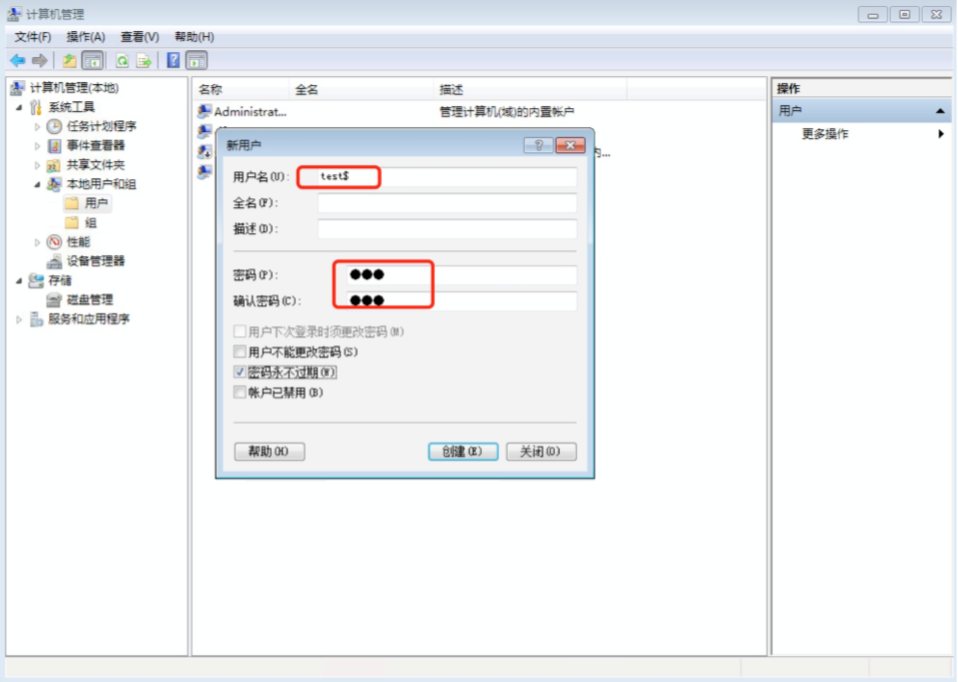
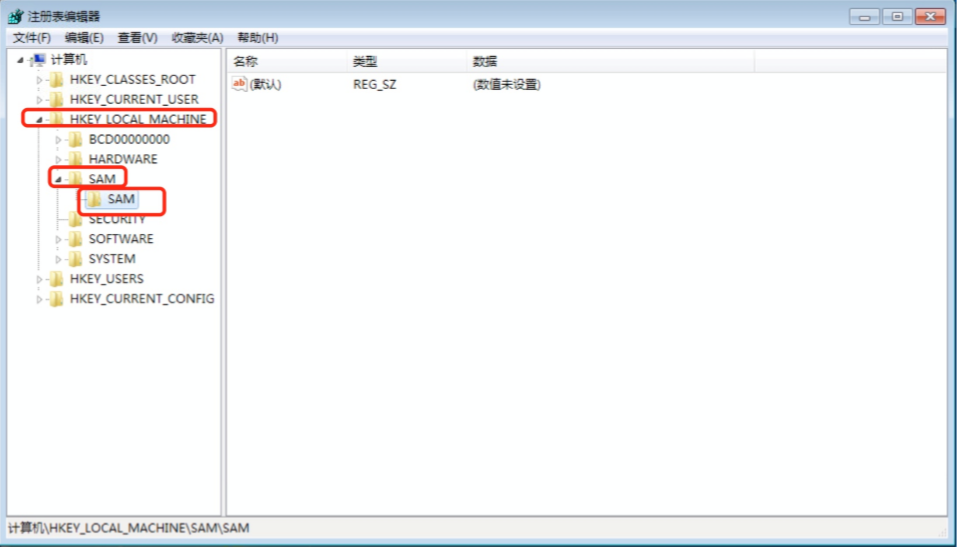
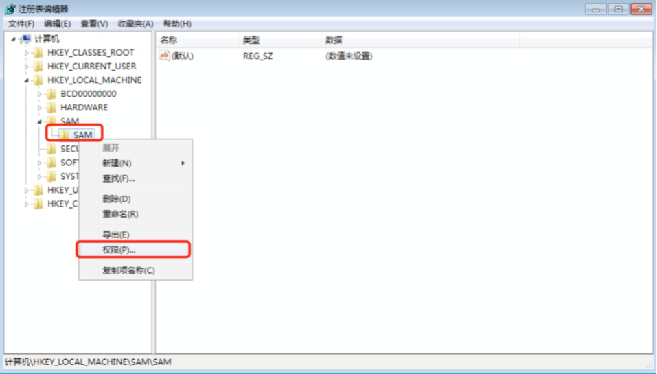
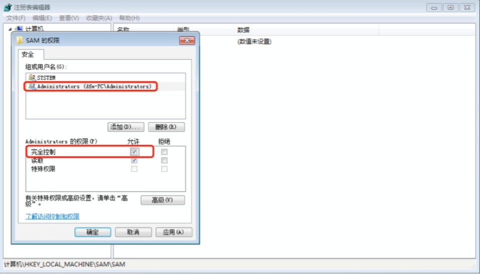
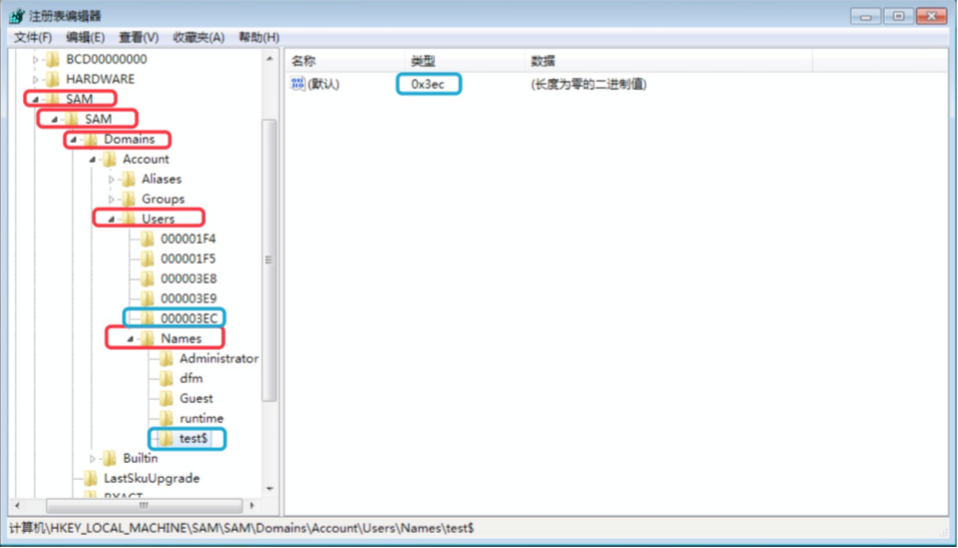
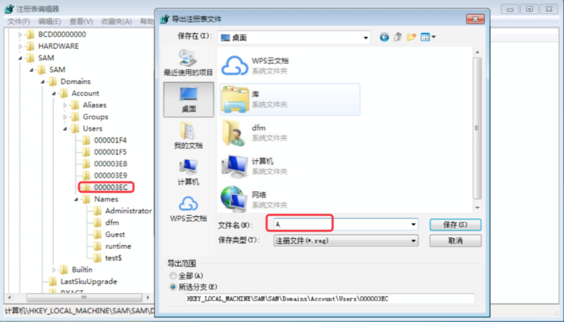
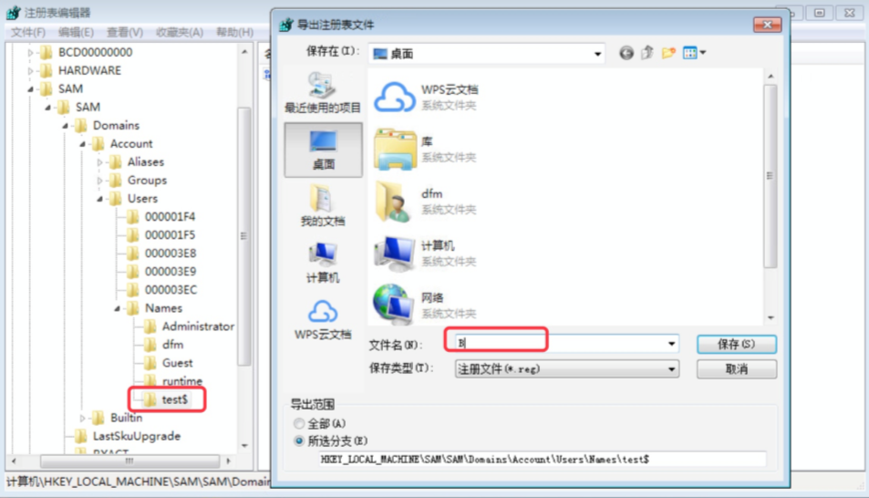
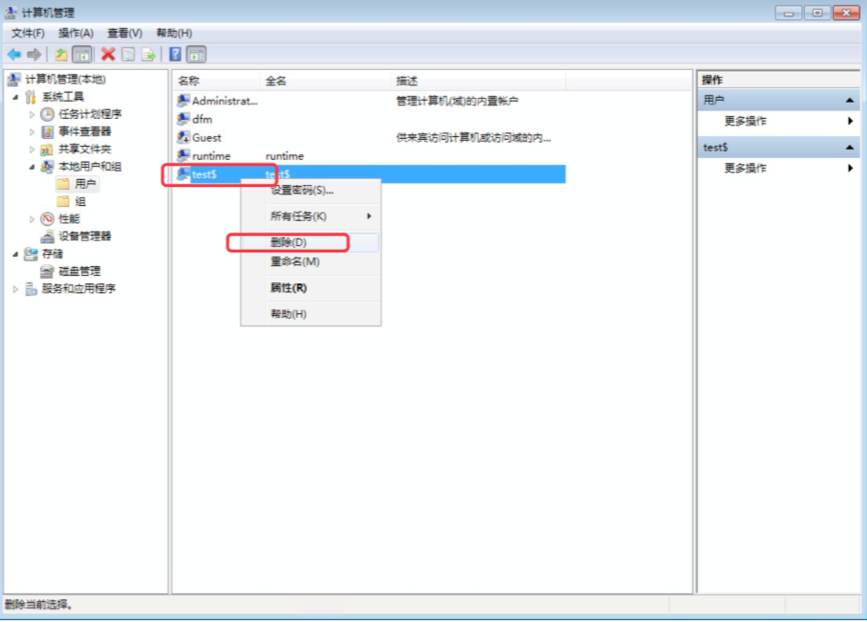

Windows影藏后门账户
注：本演示环境使用虚拟环境模拟搭建，非真实攻击，请严格遵守国家安全法规！
实验环境：
| 角色 | 操作系统 | IP地址 | 所需工具 |
|---|---|---|---|
| 靶机 | Windows 7 | 无 | 无 |
操作流程：
1.使用命令或在计算机管理中创建用户，用户名后加上$来使用户隐藏。
命令:
net user test$ 123456 /add

2.开始运行中输入命令regedit 打开注册表编辑器，展开HKEY_ LOCAL_ MACHINE - SAM - SAM。

3.由于默认没有权限访问注册表中的SAM文件夹，需要分配权限才能访问。右键点击SAM，选择权限，为Administrators组分配完全控制权限。


4.刷新注册表，SAM 文件夹中的内容已经可以显示。展开SAM - Domains - Account - Users - Names，找到之前创建的用户和对应的编码选项。点击test$选项，发现右边默认键值为0x3ec ，然后在Users文件夹中，找到结尾为3EC的选项。

5. 导出.上一步找到的用户名和编码选项的注册表项。


6.删除! test$用户。
